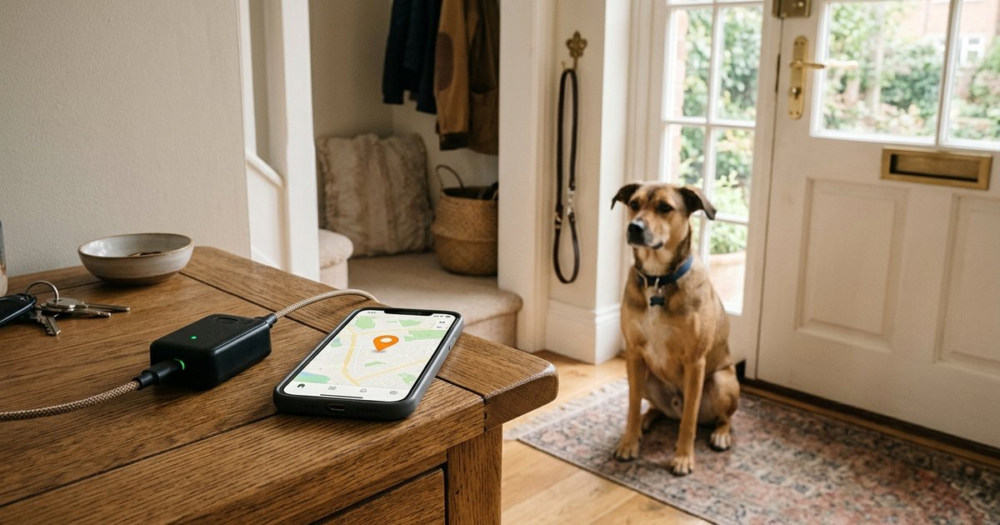
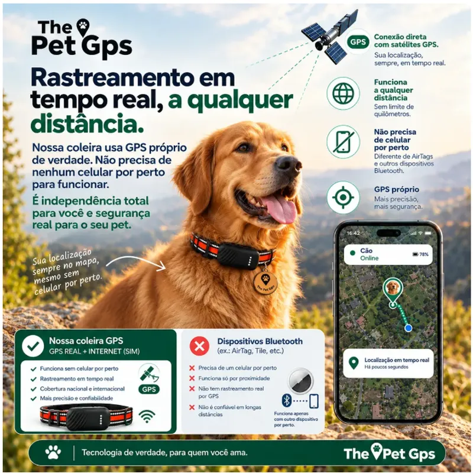

Erros Comuns com Coleira GPS no Pet: 12 Falhas de Bateria, Sinal, Chip e Cerca Virtual (e Como Evitar)
Publicado em 22 de agosto de 2026 · Atualizado em 22 de novembro de 2026 · Por Nildo Alves, curadoria de produtos pet no Smart Pet Gadgets · Leitura: 9 min

Ilustração: carregar o rastreador antes do passeio evita o erro mais comum, a bateria acabar na hora errada.
A coleira GPS costuma falhar por escolha ou configuração errada, não por defeito. Os erros mais comuns são cinco: comprar uma tag Bluetooth achando que é GPS, não conferir o sinal da operadora onde o pet anda, deixar o chip sem dados, usar o modo em tempo real o tempo todo (a bateria acaba em menos de um dia) e confiar na cerca virtual sem testar. Abaixo estão os 12 erros, o sintoma de cada um e como evitar, além de um teste de 10 minutos para fazer antes de precisar da coleira de verdade.
The Pet GPS 4G: chip incluso com 1 ano de dados e homologada pela Anatel, o que evita dois erros da lista.Link de afiliado — sem custo extra para você.
Muitos anúncios chamam de "GPS" uma tag Bluetooth, como as compatíveis com o Buscar da Apple ou com o Encontre Meu Dispositivo do Google. Ela não tem GPS nem chip: a posição só atualiza quando um celular da mesma rede passa perto do pet. Na cidade funciona bem; em sítio, trilha ou estrada vazia, a posição pode ficar horas parada. Como reconhecer: se pesa cerca de 10 g, usa pilha de relógio e não tem mensalidade, é tag. Entenda a diferença em como funciona a coleira GPS.
2. Não conferir o sinal da operadora onde o pet anda
O GPS descobre onde o pet está pelos satélites, mas é o chip que envia a posição ao app. Sem sinal da operadora, a coleira não consegue mandar nada, e o app mostra o último ponto enviado. Isso não é defeito. Antes de comprar, confira o mapa de cobertura da operadora nos lugares onde o pet passa tempo: casa, sítio, casa de praia. Se o aparelho aceita chip comum, escolha a operadora que pega melhor ali.
3. Esquecer o custo do chip ou o fim do período incluso
Uma das causas mais comuns de "parou de funcionar do nada" é o chip sem dados. Alguns rastreadores vêm com chip e um período incluso (a The Pet GPS traz 12 meses); outros pedem chip comprado à parte, como os da ANXK. Anote quando o plano ou o período incluso vence e coloque um lembrete. Se a ideia é fugir da mensalidade, veja coleira GPS sem mensalidade.
4. Comprar aparelho sem homologação da Anatel
Rastreador com chip é um aparelho de telecomunicação e precisa ser homologado pela Anatel para ser vendido no Brasil. Não é só burocracia: segundo o Idec, a operadora pode deixar de ativar ou suspender o serviço de um aparelho sem o selo. Procure o número de homologação no anúncio ou na embalagem, principalmente em importados baratos.
5. Escolher um rastreador pesado demais para o porte
Os rastreadores 4G que analisamos pesam de 27 a 42 g; num cão de 20 kg isso não faz diferença, mas num cão de 2 a 3 kg incomoda. Confira o peso só do módulo na ficha técnica, não o da coleira inteira. Para cão muito pequeno, prenda o rastreador no peitoral. Detalhes em coleira GPS para cachorro pequeno.
6. Ignorar a proteção contra água
A sigla IP indica a resistência. IP65 aguenta chuva e respingos, mas não mergulho. IP67 aguenta imersão temporária, o que importa para o cão que nada em piscina, lago ou mar. Se o seu cão adora água, filtre por IP67, como o ANXK G58.
7. Não checar o vendedor e o suporte
Há relatos de coleiras que pararam depois de poucos meses e de dificuldade com suporte e troca, como esta reclamação no Reclame Aqui (consultada em 22/08/2026), que é sobre a própria The Pet GPS, a coleira que indicamos no topo. Vale para qualquer marca: confira as avaliações do vendedor, não só do produto; guarde a nota fiscal; e faça o teste de 10 minutos nos primeiros dias, enquanto ainda dá para devolver.
Erros no Dia a Dia
8. Deixar o modo tempo real ligado o tempo todo
No modo tempo real (ou "ao vivo"), a coleira envia a posição a cada poucos segundos, e isso gasta a bateria rápido. O ANXK G58, por exemplo, informa no anúncio "mais de 20 horas de uso contínuo", enquanto em espera dura bem mais. Use o tempo real só durante a busca, com o pet sumido, e volte ao modo normal depois.
9. Esperar atualização instantânea no modo economia
No modo economia, a coleira envia a posição em intervalos longos ou só quando o pet se move. O ponto no mapa pode estar alguns minutos "atrasado", e isso é a configuração escolhida, não falha. Olhe sempre a hora da última atualização no app. Escolha o modo pela rotina: pet que foge com frequência pede modo normal com cerca virtual; pet que fica em casa aguenta o economia.
10. Esquecer de carregar
Os rastreadores 4G que analisamos duram de 4 a 7 dias por carga, segundo os fabricantes, e menos com uso intenso. É fácil esquecer, e a fuga sempre acontece no dia em que a bateria acabou. Escolha um dia fixo da semana para carregar, deixe o alerta de bateria fraca ligado no app e carregue antes de viagens e passeios longos.
11. Confiar na cerca virtual sem testar
A cerca virtual compara cada nova posição com o perímetro que você desenhou. Três coisas fazem ela falhar:
Raio pequeno demais: dentro de casa a coleira usa Wi-Fi ou torre de celular, com erro de dezenas de metros, e o ponto "pula" para fora, gerando alarme falso. Deixe folga além do muro.
Notificações bloqueadas: se o celular economiza bateria fechando o app ou bloqueia as notificações dele, o alerta não aparece.
Atraso da atualização: se a coleira envia a posição a cada 3 minutos, o alerta pode chegar até 3 minutos depois da fuga.
Coleira frouxa o pet tira com a pata; apertada machuca. O American Kennel Club recomenda o teste dos dois dedos: se não passam dois dedos por baixo da coleira, está apertada; se passam mais, está frouxa. Também não tire a plaquinha com telefone nem dispense o microchip: o GPS mostra onde o pet está, mas quem o encontrar só sabe de quem ele é pela plaquinha ou pelo microchip. Veja coleira GPS ou microchip. Em gato, use fecho que solta com puxão; os cuidados estão em coleira GPS para gato.
O Teste de 10 Minutos Antes de Confiar na Coleira
Faça isso na primeira semana, ainda dentro do prazo de devolução:
Carregue até 100% e confira se o app mostra a bateria correta.
Libere as permissões do app no celular: notificações e uso de bateria sem restrição.
Desenhe a cerca virtual com folga em volta da casa.
Saia com a coleira na mão (ou com o pet na guia) e ande até passar do limite da cerca.
Cronometre o alerta. Veja quanto tempo leva para chegar a notificação e se o trajeto aparece no mapa.
Teste o modo tempo real por 1 ou 2 minutos e veja se o ponto acompanha você.
Repita onde o sinal é fraco, se o pet frequenta sítio ou praia.
Se a coleira passou nos sete passos, você sabe o que esperar dela. Se falhou, ainda dá para trocar.
Rastreadores que Já Evitam Alguns Desses Erros
Separamos três rastreadores 4G do nosso comparativo de coleira GPS para cachorro, cada um resolvendo um erro diferente. Todos têm entrega no Brasil. Os preços são da data indicada; confira no link antes de comprar.

Evita os erros 3 e 4: chip e Anatel
The Pet GPS 4G
O chip já vem dentro, com 12 meses de rastreamento inclusos, e o anúncio informa a homologação pela Anatel. É o formato mais simples para quem não quer lidar com operadora.
Bateria de até 7 dias, carregador magnético
Cerca virtual com alerta de fuga, histórico de trajeto, alarme sonoro, tag com QR Code
Nota 4,5 com 51 avaliações
Contras: o anúncio não informa o valor da renovação depois de 12 meses; há reclamação de suporte no Reclame Aqui, então faça o teste de 10 minutos logo ao receber
Rastreador 4G com IP67, a melhor proteção contra água entre os GPS 4G do nosso comparativo, para o cão que nada ou brinca na chuva. Localiza por GPS, Wi-Fi e torres de celular.
Bateria de 2.000 mAh; o anúncio fala em "mais de 20 horas de uso contínuo"
Cerca virtual com alerta, app para Android e iOS
Loja oficial Topshop, garantia de 90 dias
Contras: só 1 avaliação publicada; provavelmente exige chip com plano de dados à parte (confirme com o vendedor); o anúncio não informa o peso do módulo
Não testamos os aparelhos. Os erros vêm das dúvidas e reclamações mais comuns sobre coleira GPS, das especificações dos fabricantes e das fontes citadas no texto (Idec, American Kennel Club e Reclame Aqui). Os três rastreadores saíram do nosso comparativo de coleira GPS para cachorro e do de cachorro pequeno, escolhidos por resolverem um erro específico da lista. Bateria, proteção contra água e preço vêm dos anúncios no Mercado Livre.
Conclusão
A maior parte das frustrações com coleira GPS se resolve antes da compra ou na primeira semana. Antes de comprar: confirme que é GPS com chip (não tag), que a operadora pega onde o pet anda, quanto custa o chip depois e se tem selo da Anatel. Depois de receber: ajuste a coleira, deixe a plaquinha, defina um dia de recarga e faça o teste de 10 minutos. Para comparar modelos, volte ao guia de coleira GPS para cachorro.
🐾 The Pet GPS 4G: chip incluso com 1 ano de dados e homologada pela Anatel. Veja o preço de hoje.
Link de afiliado: podemos receber uma comissão por compras feitas através deste link, sem custo adicional para você.
Perguntas Frequentes
Por que a bateria da coleira GPS acaba tão rápido?
Quase sempre por causa do modo tempo real ligado o tempo todo. Nele a coleira envia a posição a cada poucos segundos: o ANXK G58, por exemplo, informa cerca de 20 horas de uso contínuo. No modo normal, os rastreadores 4G que analisamos duram de 4 a 7 dias. Use o tempo real só durante a busca.
Por que a coleira GPS demora para atualizar a localização?
Porque no modo economia ela envia a posição em intervalos longos ou só quando o pet se move, para poupar bateria. Dentro de casa, ela também troca o satélite pelo Wi-Fi ou pelas torres de celular, e o ponto fica menos preciso. Confira o modo no app e a hora da última atualização.
Por que a coleira GPS parou de funcionar?
As causas mais comuns são chip sem dados ou período incluso vencido, bateria descarregada, falta de sinal da operadora no lugar onde o pet está e app sem permissão de notificação no celular. Só depois de descartar essas causas vale suspeitar de defeito.
Coleira GPS funciona em qualquer região?
Não. O GPS recebe o sinal dos satélites em qualquer lugar a céu aberto, mas a coleira só envia a posição ao app onde a operadora do chip tem sinal. Em área rural isolada ela pode ficar sem enviar. Confira o mapa de cobertura da operadora nos lugares que o pet frequenta.
Por que a cerca virtual dá alerta falso?
Normalmente porque o raio está pequeno demais. Dentro de casa a coleira usa Wi-Fi ou torres de celular, com erro de dezenas de metros, e o ponto pode aparecer fora da cerca mesmo com o pet em casa. Desenhe o perímetro com folga além do muro.
O que verificar antes de comprar uma coleira GPS?
Se é GPS com chip ou só tag Bluetooth, se a operadora tem sinal onde o pet anda, quanto custa o chip depois do período incluso, se tem selo da Anatel, o peso do módulo para o porte do pet, a proteção contra água (IP67 para quem nada) e as avaliações do vendedor.
Escrito por Nildo Alves para o Smart Pet Gadgets. Fontes consultadas em 22/11/2026, exceto onde indicado. Preços e especificações vêm dos anúncios no Mercado Livre entre 12/11 e 16/11/2026 e podem mudar. Veja nossa política editorial e como verificamos as fontes citadas neste artigo.
NA
Nildo Alves — tutor de pets e curador de produtos no Smart Pet Gadgets. Pesquisa especificações de fabricante, dados de mercado e fontes veterinárias publicadas por terceiros para ajudar outros tutores a escolher melhor.